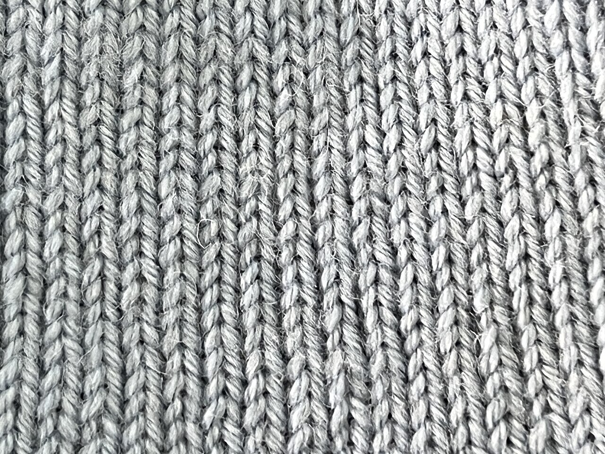
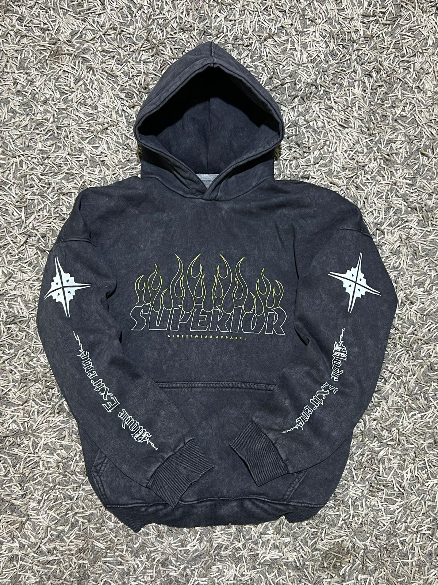

Plain jersey
Plain Jersey / 平纹
Basic single-knit fabric for T-shirts, tops, base layers and childrenswear. Smooth face, soft hand feel and easy bulk color development.
- MOQ
- 300-500kg/color
- Range
- 140-220gsm, cotton/poly/modal blends

For apparel brands, importers and garment factories
We supply knit fabrics for apparel brands and garment factories, focusing on plain jersey, double yarn jersey, streetwear french terry and stretch jersey with sample development, color matching and export-ready bulk follow-up.
Product lines
Four focused fabrics for T-shirts, heavyweight basics, streetwear hoodies and stretch-fit apparel.
Garment photos are shown as application references. The main business is knit fabric supply: rolls, yardage, lab dips and bulk fabric production.

Plain jersey
Basic single-knit fabric for T-shirts, tops, base layers and childrenswear. Smooth face, soft hand feel and easy bulk color development.

Heavyweight basics
Heavier, cleaner and more stable jersey for premium basics, oversized tees and private-label streetwear programs.

Streetwear hoodies
Loop-back terry for hoodie drops, sweatshirts, joggers and relaxed sets. Supports brushed or unbrushed back, enzyme wash and anti-pilling finishing.

Stretch jersey
Spandex plain jersey with better recovery for fitted T-shirts, base layers, active tops and womenswear programs.
Factory support
Use this section to replace placeholders with your real machines, partner mills, production capacity, inspection process and certificates.
Match buyer samples by structure, composition, hand feel, weight and price target.
Support Pantone colors, buyer swatches, brushing, peaching, wicking and anti-pilling.
Check weight, width, shade, shrinkage, color fastness and visible fabric defects.
Prepare packing details, carton marks, shipping documents and delivery coordination.
Buyer services
Lab dips, strike-off samples and pre-production samples before bulk production.
Adjust GSM, elastane ratio, yarn count, brushing level and finishing according to style.
Prepare shrinkage, color fastness, pilling and composition testing when required.
Keep shade records, approved sample references and production notes for repeat orders.
Workflow
FAQ
For custom dyed fabric, a practical starting point is usually 300-500kg per color.
Yes. Send a physical sample or clear spec sheet. We match structure, GSM and hand feel first.
Yes. Lab dips are recommended for custom colors before arranging bulk dyeing.
Certificate availability depends on fiber, mill and order requirement. Add real certificates here later.
For ordinary custom colors, 20-35 days after sample and order confirmation is a common reference.
Insights
Guide
Explain hand feel, drape, GSM and garment fit choices for T-shirt buyers.
Buyer checklist
Compare terry weight, brushing, shrinkage control and seasonal buying strategy.
Development
Teach buyers to provide elastane ratio, GSM, width, color, quantity and test standards.
Contact
Contact Jason Huang for plain jersey, double yarn jersey, french terry and stretch jersey fabric development or bulk quotation.